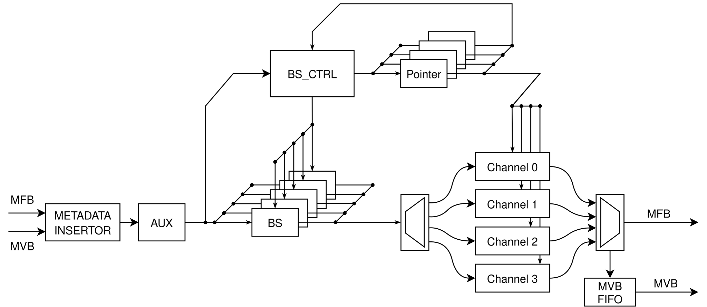
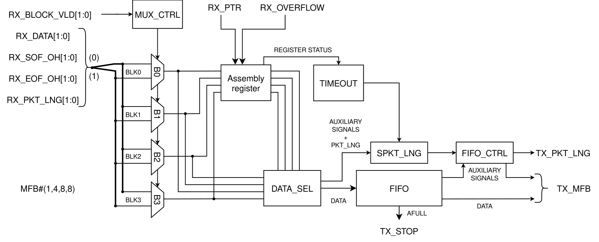

Frame Packer¶
{kind=link}

- ENTITY FRAME_PACKER IS¶
The FRAME_PACKER module is used to create Super-Packets. The incoming packets are aligned to the BLOCKs so that the space between them is minimal (ranges from 0 to 7 items per each packet). The size of the Super-Packet is set by the parameter SPKT_SIZE_MIN. This value is used for length comparison, so the super-packet size should be around this length. The timeout is set by the parameter TIMEOUT_CLK_NO, e.g. in number of clock cycles. In the worst case, the latency is 2*TIMEOUT_CLK_NO due to the internal arrangement. The TX_MVB_HDR_META and TX_MVB_DISCARD are included here for compatibility, but are not currently used. The depth of each channel FIFO is set by the constant value FIFO_DEPTH and is set by deafult to 512 (Best BRAM optimization for Intel). Warning! There is a possible bug when sending the combination of small and large packets. In 400G version this could result in sending a packet larger than USR_PKT_SIZE_MAX.
Generics
PortsGeneric
Type
Default
Description
MFB_REGIONS
natural
4
Number of regions for incoming and outgoing packets. Note that the 4 region version is not resource optimized and will most likely not fit in the FPGA.
MFB_REGION_SIZE
natural
8
Number of blocks in each region for incoming and outgoing packets. Only this configuration was tested.
MFB_BLOCK_SIZE
natural
8
Number of items in each block for incoming and outgoing packets. Only this configuration was tested.
MFB_ITEM_WIDTH
natural
8
Length of each item in bits for incoming and outgoing packets. Only this configuration was tested.
RX_CHANNELS
natural
8
Number of virtual lanes. This number should be a power of 2. Note that each channel is created as a standalone unit (resource usage is exponentially dependent on this parameter).
HDR_META_WIDTH
natural
12
Header meta is not currently used.
USR_RX_PKT_SIZE_MIN
natural
64
Minimal size in bytes of the incoming packets (also minimal size of Super-Packet).
USR_RX_PKT_SIZE_MAX
natural
2**14
Maximal size in bytes of the incoming packets (also maximal size of Super-Packet).
SPKT_SIZE_MIN
natural
2**13
The size of the Super-Packet (in bytes) the component is trying to reach. Should be power of 2.
TIMEOUT_CLK_NO
natural
4096
Timeout in clock cycles. Should be power of 2.
DEVICE
string
“AGILEX”
Optimization for FIFOs
Port
Type
Mode
Description
=====
Clock and Resets inputs
=====
=====
CLK
std_logic
in
RST
std_logic
in
=====
RX MFB+MVB interface (regular packets)
=====
=====
RX_MFB_DATA
std_logic_vector(MFB_REGIONS*MFB_REGION_SIZE*MFB_BLOCK_SIZE*MFB_ITEM_WIDTH-1 downto 0)
in
RX_MFB_SOF
std_logic_vector(MFB_REGIONS-1 downto 0)
in
RX_MFB_EOF
std_logic_vector(MFB_REGIONS-1 downto 0)
in
RX_MFB_SOF_POS
std_logic_vector(MFB_REGIONS*max(1,log2(MFB_REGION_SIZE))-1 downto 0)
in
RX_MFB_EOF_POS
std_logic_vector(MFB_REGIONS*max(1,log2(MFB_REGION_SIZE*MFB_BLOCK_SIZE))-1 downto 0)
in
RX_MFB_SRC_RDY
std_logic
in
RX_MFB_DST_RDY
std_logic
out
RX_MVB_LEN
std_logic_vector(MFB_REGIONS*log2(USR_RX_PKT_SIZE_MAX+1) - 1 downto 0)
in
Length of the regular packets
RX_MVB_CHANNEL
std_logic_vector(MFB_REGIONS*max(1,log2(RX_CHANNELS))-1 downto 0)
in
Channel ID of each regular packet
RX_MVB_VLD
std_logic_vector(MFB_REGIONS-1 downto 0)
in
RX_MVB_SRC_RDY
std_logic
in
RX_MVB_DST_RDY
std_logic
out
=====
TX MFB+MVB interface (Super-Packets)
=====
=====
TX_MFB_DATA
std_logic_vector(MFB_REGIONS*MFB_REGION_SIZE*MFB_BLOCK_SIZE*MFB_ITEM_WIDTH-1 downto 0)
out
TX_MFB_SOF
std_logic_vector(MFB_REGIONS-1 downto 0)
out
TX_MFB_EOF
std_logic_vector(MFB_REGIONS-1 downto 0)
out
TX_MFB_SOF_POS
std_logic_vector(MFB_REGIONS*max(1,log2(MFB_REGION_SIZE))-1 downto 0)
out
TX_MFB_EOF_POS
std_logic_vector(MFB_REGIONS*max(1,log2(MFB_REGION_SIZE*MFB_BLOCK_SIZE))-1 downto 0)
out
TX_MFB_SRC_RDY
std_logic
out
TX_MFB_DST_RDY
std_logic
in
TX_MVB_LEN
std_logic_vector(MFB_REGIONS*log2(USR_RX_PKT_SIZE_MAX+1)-1 downto 0)
out
Length of the Super-Packet
TX_MVB_HDR_META
std_logic_vector(MFB_REGIONS*HDR_META_WIDTH-1 downto 0)
out
Not used
TX_MVB_DISCARD
std_logic_vector(MFB_REGIONS-1 downto 0)
out
Not used
TX_MVB_CHANNEL
std_logic_vector(MFB_REGIONS*max(1,log2(RX_CHANNELS))-1 downto 0)
out
Channel ID of each Super-Packet
TX_MVB_VLD
std_logic_vector(MFB_REGIONS-1 downto 0)
out
TX_MVB_SRC_RDY
std_logic
out
TX_MVB_DST_RDY
std_logic
in
Architecture¶
The Frame Packer operates in the following way. The MFB and MVB has to be synchronized as the channel ID of each packet is used to sort incoming packets. This is done at the input using a Metadata Insertor.
The following component in the pipeline named as Auxiliary generator is used to extract the auxiliary data used to calculate the select signal for each Barrel Shifter and to recreate the MFB protocol in each channel unit (packet accumulator).
The protocol recreation is necessary as shifting the input data will invalidate MFB protocol.
The auxiliary data is generated separately for each packet in the MFB word, resulting in multiple vectors: slv_array_t(MFB_REGIONS downto 0)(...).
Additionaly is each packet filtred to its own vector slv_array_t(MFB_REGIONS downto 0)(...).
The following list summarizes the data generated:
TX_CHANNEL_BS - Channel ID of each packet
TX_PKT_LNG - Length of the current packet (valid with SOF)
TX_BLOCK_VLD - Valid blocks in binary format (one valid bit per each valid block)
TX_SOF_ONE_HOT - SOF_POS in one hot format
TX_EOF_ONE_HOT - EOF_POS in one hot format
TX_SOF_POS_BS - SOF_POS for calculation of select signal
For the calculation of the select signal for each packet a component named BS_CALC is used.
The parameters of the calculation are the status pointer, the number of valid blocks and the SOF_POS of the packet within the MFB.
When the shift select is being calculated, the packets are routed to the Barrel Shifters (one per packet).
Its purpose is to rotate the MFB word so that the data can be easily assembled in each channel unit.
The first Barrel Shifter is used for packets that originates in the previous words.
Other Barrel Shifters are used for packets that begins in the current word.
The packet starting in the first region is processed by the barrel shifter with index 1, the packet starting in the second region is processed by the barrel shifter with index 2, and so on.
Along with the packets, the previously generated auxiliary signals are shifted as well.
After the MFB word is shifted, the packets and their auxiliary signals are redistributed to the channels according to their channel ID. Each channel unit begins with MUX array that selects data based on the valid blocks array that arrives along with shifted data. Each MUX passes the block according to its index. The input of the MUXs comes from the Barrel Shifters (the number of MUX inputs depends on the number of Barrel Shifters).
{kind=link}

After the data is selected, it is either stored in a temporary register or sent for further processing.
This temporary register (assembly register) is used to store data until the whole word is full of valid data.
Its status is monitored by the status pointer, which is also used for the calculation of shift select signal.
When the assembly register is full, its contents, along with auxiliary signals, are passed to the next stage and the MFB protocol is re-created.
Assembled word is sent to the FIFO and its length is sent to the SPKT_LNG unit that controls the length of the Super-Packet.
The Super-Packet length is calculated from the length of regular packets that are stored in the FIFO.
Once the desired length is reached or the timeout is triggered, the content of the FIFO is sent to the output.
The MFB protocol of the Super-Packet is created in the FIFO_CTRL unit, which masks the SOF and EOF of partial packets.
At the output of the FRAME_PACKER is a simplified version of the MFB_MERGER, which passes the Super-Packets from each channel to the output.
Along with the Super-Packets, its length and its channel ID are read from the channel as well.
The length and the channel ID are sent to the MVB_FIFO which is directly connected to the output MVB interface.
References¶
For more detailed description refer to David Beneš’s master thesis (2023/2024)